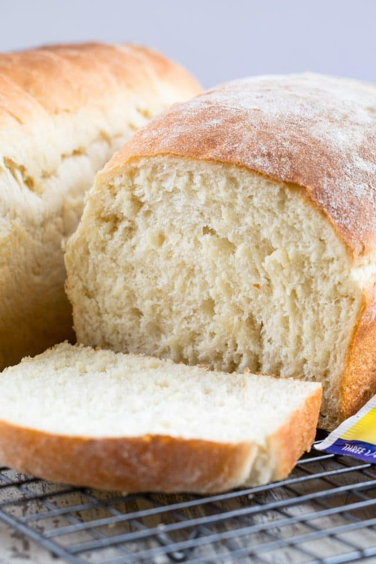

Homemade White Bread

Description
A simple and straightforward white bread recipe that can be adjusted to different purposes and tastes.
Ingredients
- 5 1/2 to 6 cups all-purpose flour
- 3 tablespoons granulated sugar
- 4 1/2 teaspoons active dry yeast
- 2 teaspoons salt
- 1 1/2 cups water
- 1/2 cup milk
- 2 tablespoons butter
Steps
- Combine 2 cups flour, sugar, yeast in a bowl.
- Combine water, milk, and butter and heat in microwave until warm but not hot (120F to 130F)
Add to flour mixture.
- Stir and slowly incorporate 1 cup of flour until dough can be formed into a ball.
- Knead dough on lightly floured surface until smooth and dough springs back after being pressed.
- Cover with towel and let rest for 10 minutes.
- Cut dough into 2 equal pieces and roll out into a 12x7 inch rectacngle.
- Start at short end of rectacngles and roll up dough. Pinch seams and ends to seal.
- Place bread seam-side down into loaf pans or platter that has been greased with spray or oil.
Cover with towel and let rise in warm place until doubled in size (about 45 mintues)
- Bake at 400F for 20-30 minutes or until golden brown. Transfer from pan onto wire rack and let cool completely before serving.